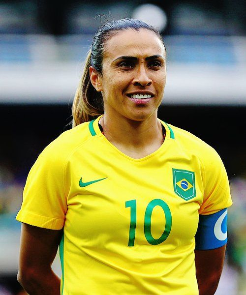
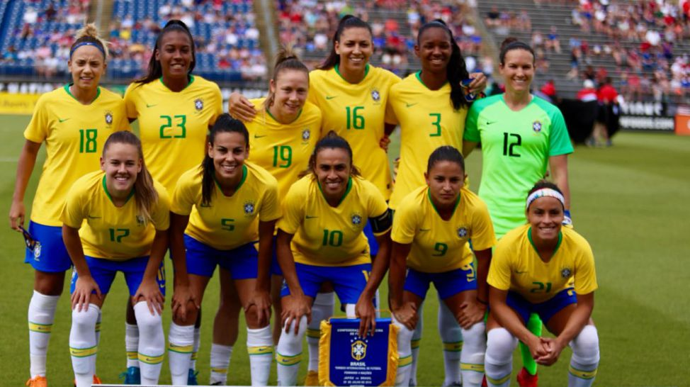

O primeiro registro que se tem sobre futebol feminino vem da Inglaterra, onde o esporte nasceu, numa partida entre inglaterra e Escócia acontecida em 1988, em Londres. No Brasil, exitem registros das partidas mistas, como homens e mulheres juntos, em 1908 e 1909. Durante muito tempo um evento beneficiente ocorrido em 1913 foi considerado a primeira partida de futebol feminino no Brasi, mas anos depois foi descoberto que, na verdade, o time "feminino" era formado por jogadores do Sport Club Americano, campeão paulista daquele ano, vestidos de mullher, misturados a "senhoritas da sociedade".
Sendo assim, então, oficialmente a primeira partida de futebol feminino no Brasil ocorreu em 1921, entre senhoritas dos bairros Tremembé e Cantareira (hoje o bairro de Santana), na zona note de Sõa Paulo. Essa partida foi noticiada pelo jornal "A gazeta" como uma uma atração "curiosa", quando não "cômica", em meio ás festas juninas. Isso porque, naquele tempo, as mulheres tinham um papel secundário no esporte, particularmente no futebol. Em geral, limitavam-se á torcida e a concursos de madrinhas de clubes. Em campo, no máximo davam pontapé inicial ou disputavam tiros livres.
As regras do futebol foram criadas pela International Football Association Board (IFAB) em 1938 e foram publicadas pela FIFA. O campo de jogo: O campo deve ser retangular:
| Comprimento | Largura |
|---|---|
| Mínimo 90 metros | Mínima 45 metros |
| Máximo 120 metros | Máxima 90 metros |
Bola de Futebol: A bola deve ter de 68 a 70 cm de circunferência e pesar de 410 a 450g no início da partida. Aos jogadores, é proibido utilizar a bola com a mão, a não ser o goleiro, dentro do limite do campo. A bola não pode ser trocada sem a autorização do árbitro.
Número de jogadores: Duas equipes com 11 jogadores cada, sendo 10 na linha e um goleiro. Se uma das equipes tiver apenas 7 jogadores, a partida é adiada ou não é iniciada.
Equipamentos no Futebol: Os jogadores não poderão portar objetos que possam machucar o adversário ou a si. O jogador deve usar equipamentos básicos como a camisa, calções, chuteiras, caneleiras e as duas equipes devem ter um conjunto de equipamentos diferentes para que possam ser identificados no campo. Caso o jogador não esteja de com todos os equipamentos corretos, o árbitro deve orientá-lo a organizar o equipamento.
Árbitro: Cada partida deve ter um árbitro, que deve ser a autoridade em campo e recebe auxílio de dois juízes de linhas, conhecidos como bandeirinhas. Ele realiza a vistoria do gramado, aplica as regras e soluciona lances duvidosos. Ele pode alterar sua decisão caso perceba que está incorreta.
Duração da Partida: O jogo dura oficialmente 90 minutos, com dois tempos de 45 minutos e um intervalo de 15 minutos. O tempo da partida pode ser prolongado caso ocorram substituições, lesão de jogadores, transporte de jogadores ou por algum motivo que interrompa a partida.
Início e reinício do jogo: Há oito maneiras de interromper a partida e reiniciá-la. O jogo começa com um pontapé de saída e deverá ser reiniciado com esse pontapé caso ocorra um gol de uma equipe. Se a bola sair e um jogador tocá-la, é concedido um arremesso lateral ao outro time que reinicia o jogo. A terceira maneira é o tiro de meta e o jogo é reiniciado com o goleiro chutando a bola para o campo. Se a equipe adversária retorna para a defesa, sem um objetivo em si, o outro time ganha ] um pontapé de canto e são obrigados a reiniciar o jogo do canto onde a bola saiu. Ainda há a falta que paralisa o jogo, a lesão de um atleta e o impedimento.
Gol marcado: Ocorre quando a bola ultrapassa a linha de meta por baixo do travessão.
Impedimento: é considerado impedimento o jogador que se encontra mais próximo da linha da meta contrária que a bola e o penúltimo adversário, quando está em sua própria metade do campo, quando se encontra na mesma linha que os dois últimos adversários e na mesma linha que o penúltimo adversário.
Faltas e conduta antidesportivas: é concedido pelo árbitro um tiro livre direto para o jogador que comete faltas de uma forma que imprudente ou violenta. Agarrar um adversário, chutá-lo, empurrá-lo, tocar a bola com as mãos, dentre outras. Caso ocorra uma falta desportiva recorrente ou incitação à violência ao adversário, o jogador pode ser advertido com um cartão amarelo. As faltas passíveis de cartão vermelho são a conduta violenta do jogador, impedir um gol com a mão se você não for o goleiro, empregar linguagem ofensiva e receber o segundo cartão de advertência na partida.
A Copa do Mundo de futebol feminino teve sua primeira edição não-oficial, considerada experimental, acontecendo na China em 1988 com a participação de 12 seleções. Depois, o primeiro torneio oficial aconteceu com a mesma sede e a mesma quantidade de participantes em 1991 e, a partir daí, manteve suas edições de quatro em quatro anos
– Duas jogadoras disputaram 6 edições da Copa do Mundo de futebol feminino: a meio-campista brasileira Formiga e a meia japonesa Homare Sawa, campeã do mundo em 2011. Não há na história do Mundial masculino nenhum jogador que tenha disputado tantas edições de Copa. E um novo recorde será estabelecido em 2019, quando Formiga entrar em campo mais uma vez pela seleção brasileira no Mundial da França. Será sua sétima edição de Copa do Mundo – ela disputou a primeira em 1995, aos 17 anos
Copa do mundo Feminina sub-17
Marta camisa dez da seleção Brasileira feminina
Torneio das nações - Brasil x Japão
| Partidas | Classificação |
|---|---|
| São josé x São Francisco(BA) | 1 x 0 |
| Iranduba x Foz Cataratas | 2 x 2 |
| Corinthians x Vitoria das Tabocas | 5 x 0 |